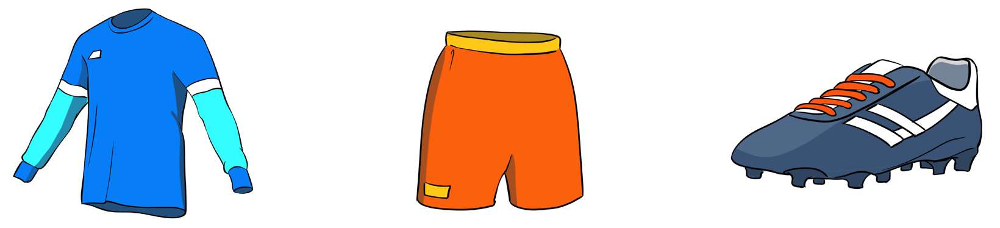

Side line

90–120 m
16.5 m
Penalty area, 18-yard box
Half-way line
5.5 m
Centre circle
Goal line
Goal, 7.3 m by 2.4 m
11 m, 40.3 m, 9.15 m, centre spot, 9.15 m, 5.5 m
Penalty spot
6-yard box
11 m
1 m, 45–90 m
Figure 4.1: The football pitch
Football equipment
The successful training and mastery of football skills require participants to be well equipped. The following are the basic equipment an individual must have for better practice.

T-shirtShortFootball cleats
T-shirt; Short